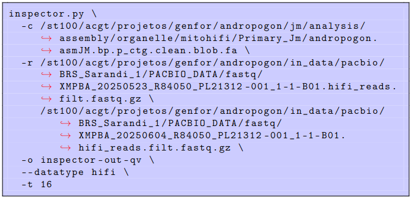
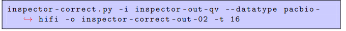
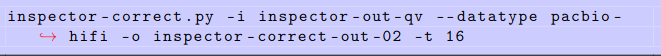
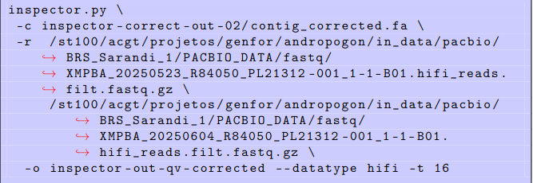

Antes de passarmos a montagem do Andropogon gayanus para a proxima etapa, precisávamos garantir que a sequência base estivesse o mais polida possível. Por mais que o Hifiasm seja um montador excelente e que já tivéssemos limpado contaminantes e genomas de organelas, o genoma nuclear bruto ainda possui ruídos. É aqui que entra a nossa etapa de avaliação e correção estrutural com o Inspector. A teoria baseada em pesquisa nos mostra que ignorar esse polimento afeta diretamente a anotação lá na frente.
O Inspector é uma ferramenta bioinformática projetada especificamente para identificar erros estruturais e de pequena escala em montagens genômicas. A lógica por trás dele é muito sólida: o software faz o alinhamento dos nossos reads brutos (PacBio HiFi) diretamente contra a montagem tratada.
Ao mapear as leituras originais de volta na sequência consenso, o Inspector consegue detectar divergências e avaliar a acurácia real da montagem. Se a montagem tomou uma decisão que não tem suporte nos reads originais, o algoritmo aponta a inconsistência e a classifica.
O software classifica as inconsistências em duas categorias principais de tamanho.
Erros estruturais (> 50 bp):
Expansão: Trata-se da inserção de sequências na montagem que não possuem suporte nas leituras originais do sequenciador.
Colapso: É a omissão ou compressão de regiões genômicas na montagem (um erro comumente associado a regiões repetitivas).
Haplotype Switch: Consiste na alternância indevida entre alelos de diferentes haplótipos durante a formação da sequência.
Inversão: Ocorre quando um segmento é montado na orientação oposta à evidenciada pelos reads.
Erros de pequena escala (< 50 bp):
Base Substitution: É a troca incorreta de um nucleotídeo (mismatch).
Small Collapse: São as pequenas deleções presentes na montagem em relação às leituras.
Small Expansion: Representam pequenas inserções indevidas na sequência montada.
Rodando direto no meu ambiente Linux, a execução do Inspector foi dividida em três etapas vitais de auditoria e edição.
Fase 1: Inspeção e Mapeamento primario, fornecemos ao software o nosso arquivo fasta da montagem primária limpa e as leituras originais PacBio HiFi para o alinhamento:

Fase 2: Correção Automática (Inspector correct) O Inspector não apenas levanta os problemas, ele também resolve. Com a função “correct”, utilizamos o output da análise anterior para que o software corrija as contigs que apresentaram erros. O resultado é um arquivo fasta com essas mudanças corrigidas:


Fase 3: Avaliação Pós-correção Como boas práticas exigem validação, pegamos o arquivo já corrigido gerado na fase 2 (“contig_corrected.fa”) e passamos pelo script do Inspector novamente. O objetivo é avaliar a montagem e recalcular os índices de qualidade (QV) posteriormente à correção dos erros:

Esse ciclo de detectar as falhas estruturais, corrigi-las matematicamente e auditar o resultado novamente é o que garante a robustez do nosso Andropogon gayanus. Foram exatamente esses arquivos corrigidos (pri_corrigida.fa, hap1_corrigido.fa, hap2_corrigido.fa) que serviram de entrada para a avaliação definitiva no Merqury. Ao resolver os erros de expansão e colapso, garantimos que nossa montagem reflita o organismo biológico real e evitamos a propagação de artefatos pelas próximas fases do projeto.